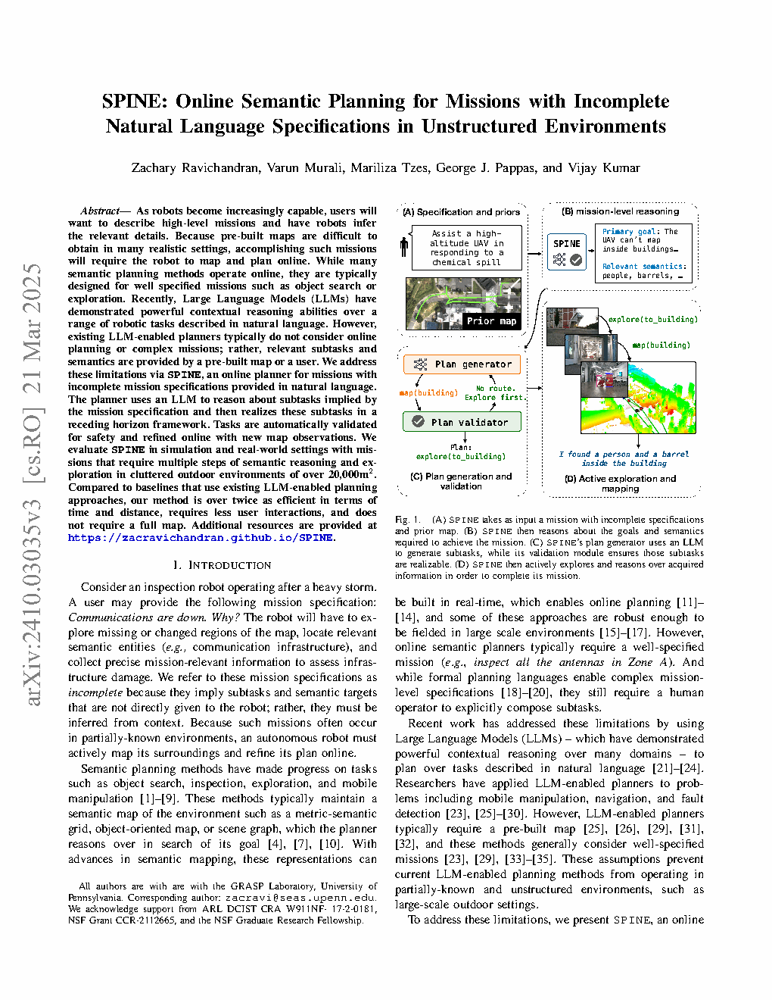
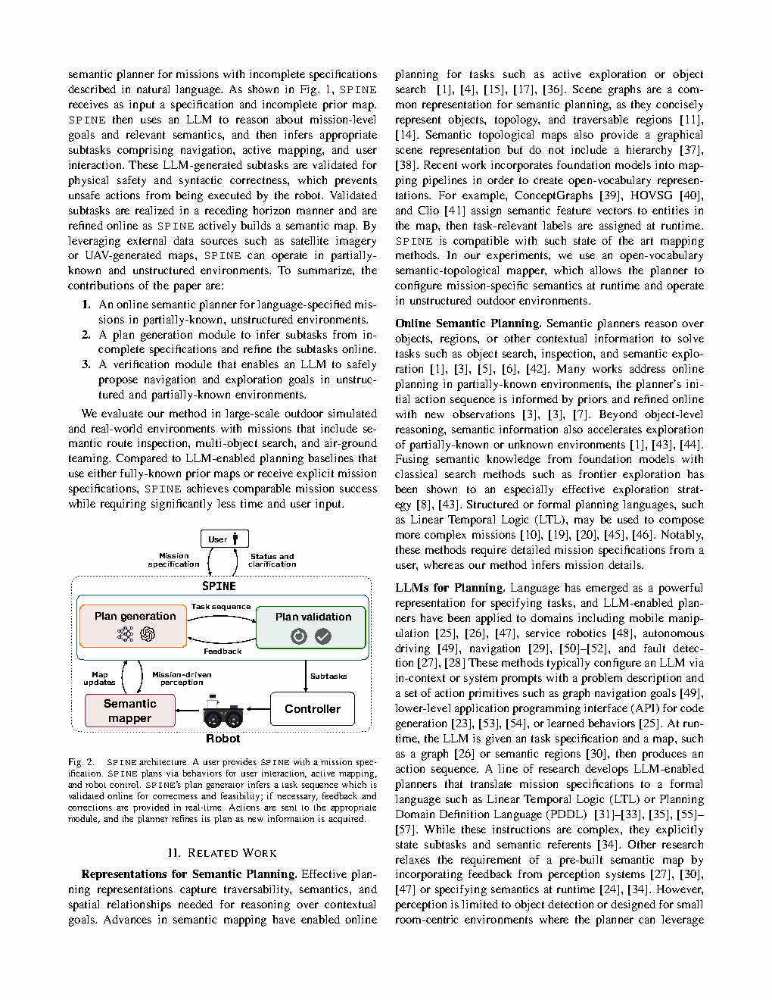
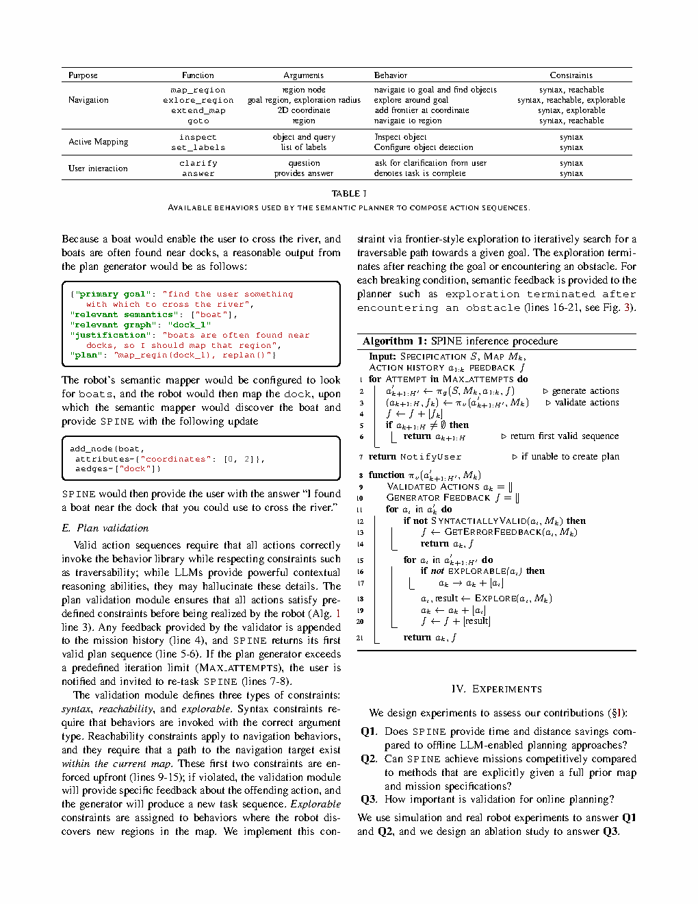
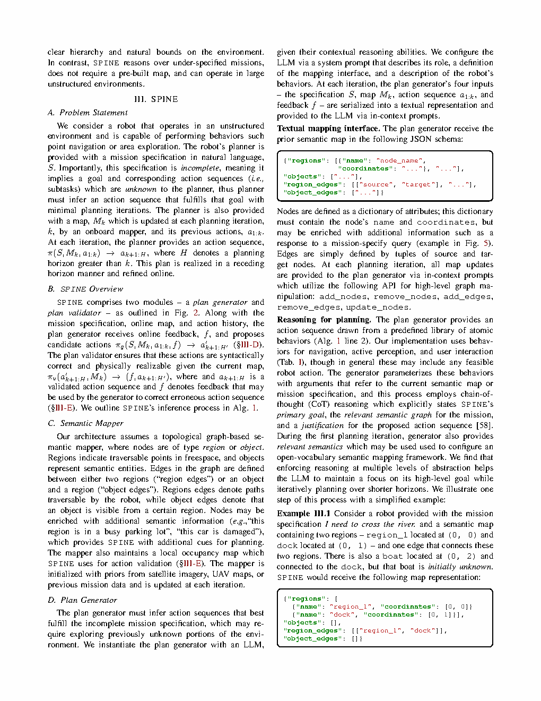
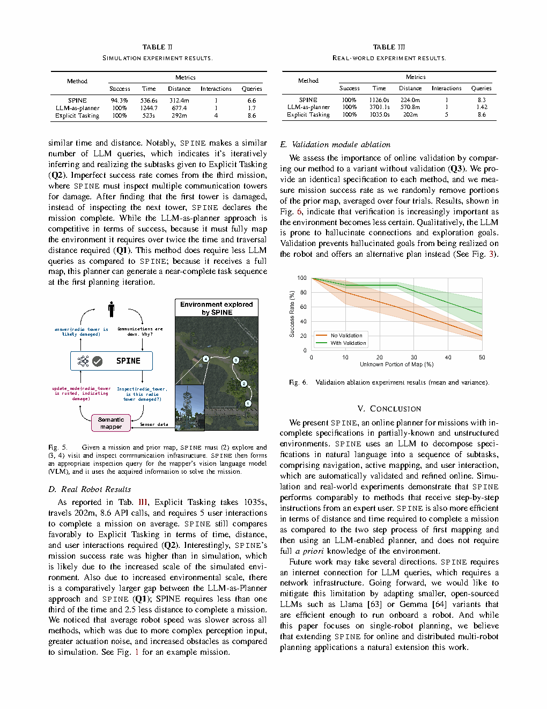

| Title | SPINE: Online Semantic Planning for Missions with Incomplete Natural Language Specifications in Unstructured Environments（SPINE：非结构化环境中面向不完整自然语言任务规范的在线语义规划） |
| Authors | Zachary Ravichandran（corresponding）、Varun Murali、Mariliza Tzes、George J. Pappas、Vijay Kumar |
| Affiliation | 宾夕法尼亚大学 GRASP 实验室（GRASP Laboratory, University of Pennsylvania） |
| Venue | ICRA 2025（IEEE International Conference on Robotics and Automation） |
| DOI / Links | https://zacravichandran.github.io/SPINE | 代码开源 |
| TL;DR | 提出SPINE——面向不完整自然语言任务规范的在线语义规划器。用户只需给出模糊的高层指令（如"风暴后物流受影响了吗？"），SPINE通过LLM（GPT-4）推理出隐含的子任务和语义目标，在滚动时域框架中自动验证安全性，并在线结合建图观测优化计划。在超过20,000m²的室外杂乱环境中，相比先完整建图再用LLM规划的方法，SPINE节省超过2倍的时间和距离，且不需要用户给出逐步指令。 |
flowchart TB
subgraph USER["用户交互层"]
MISSION["任务规范 S: 模糊自然语言 · '风暴后物流受影响了吗？'"]
ANSWER["答案反馈: '桥被阻塞，无法通行'"]
CLARIFY["澄清请求: '请确认搜索范围'"]
end
subgraph SPINE_CORE["SPINE 核心规划引擎"]
GEN["计划生成器 π_g: GPT-4 · 系统提示+上下文学习 · CoT推理"]
VAL["计划验证器 π_v: 语法检查 · 可达性检查 · 可探索性检查"]
FEEDBACK["反馈循环 f: 错误反馈 → 生成器修正计划"]
end
subgraph MAPPER["语义建图器"]
SEM_GRAPH["拓扑-语义图 M_k: 区域节点 + 物体节点 + 边"]
OCC_MAP["局部占据地图: GroundGrid · 可行域检测"]
OBJ_DET["开放词汇物体检测: GroundingDINO · 多假设追踪"]
VLM["场景描述: LLaVA · 物体属性· '此通信塔锈蚀严重'"]
end
subgraph ROBOT["机器人层"]
NAV["导航控制: ROS MoveBase · 0.5m/s"]
SENSORS["传感器: LiDAR Ouster + RGB-D RealSense"]
ODOM["里程计: Faster-LIO · LiDAR-惯性紧耦合"]
end
MISSION --> GEN
GEN -->|"a' 候选动作序列"| VAL
VAL -->|"a 有效动作序列"| NAV
VAL -->|"f 错误反馈"| GEN
NAV --> SENSORS
SENSORS --> ODOM
SENSORS --> OBJ_DET
SENSORS --> OCC_MAP
OBJ_DET --> VLM
ODOM --> OCC_MAP
OCC_MAP --> SEM_GRAPH
VLM --> SEM_GRAPH
SEM_GRAPH --> GEN
NAV --> ANSWER
classDef user fill:#fef7ed,stroke:#f59e0b,stroke-width:2px,color:#92400e
classDef core fill:#e8f0fe,stroke:#3b82f6,stroke-width:2px,color:#1d4ed8
classDef map fill:#f0ebfd,stroke:#8b5cf6,stroke-width:2px,color:#6d28d9
classDef robot fill:#e6f7ee,stroke:#10b981,stroke-width:2px,color:#047857
class MISSION,ANSWER,CLARIFY user
class GEN,VAL,FEEDBACK core
class SEM_GRAPH,OCC_MAP,OBJ_DET,VLM map
class NAV,SENSORS,ODOM robot
flowchart LR
subgraph INPUTS["传感器输入"]
LIDAR["LiDAR点云"]
RGBD["RGB+Depth"]
SEM_CFG["语义配置: 目标标签+查询"]
end
subgraph PROCESSING["处理模块"]
ODOM_M["Faster-LIO: 里程计估计 · 10Hz+"]
OCC_M["GroundGrid: 占据地图 · 可行域分割 · 区域节点生成"]
DETECT["GroundingDINO: 开放词汇物体检测 · 5Hz"]
TRACK["多假设追踪器: 检测关联 · 物体定位"]
CAPTION["LLaVA VLM: 场景描述生成 · 1Hz · '停车场'/'有桌椅的露台'"]
end
subgraph GRAPH["图更新"]
ADD_NODE["添加节点: region/object · 含坐标和属性"]
ADD_EDGE["添加边: region_edges · object_edges"]
UPDATE_ATTR["更新属性: 节点描述 · VLM答案"]
REMOVE["移除节点/边: 图一致性维护"]
end
LIDAR --> ODOM_M
LIDAR --> OCC_M
RGBD --> DETECT
RGBD --> CAPTION
SEM_CFG --> DETECT
SEM_CFG --> CAPTION
ODOM_M --> OCC_M
DETECT --> TRACK
OCC_M --> ADD_NODE
OCC_M --> ADD_EDGE
TRACK --> ADD_NODE
TRACK --> ADD_EDGE
CAPTION --> UPDATE_ATTR
ADD_NODE --> REMOVE
ADD_EDGE --> REMOVE
classDef input fill:#fef7ed,stroke:#f59e0b,stroke-width:2px,color:#92400e
classDef proc fill:#e8f0fe,stroke:#3b82f6,stroke-width:2px,color:#1d4ed8
classDef graph fill:#e6f7ee,stroke:#10b981,stroke-width:2px,color:#047857
class LIDAR,RGBD,SEM_CFG input
class ODOM_M,OCC_M,DETECT,TRACK,CAPTION proc
class ADD_NODE,ADD_EDGE,UPDATE_ATTR,REMOVE graph
flowchart TD
subgraph INIT["初始化"]
I1["用户: 给出任务规范 S · 如'通信断了，为什么？'"]
I2["加载先验地图 M_0: 从卫星影像/UAV数据 · 含缺失和错误"]
I3["LLM推理: 提取主要目标·相关语义·生成初始计划"]
end
subgraph LOOP["滚动时域循环 · 每步迭代 k"]
L1["计划生成: π_g(S, M_k, a_1:k, f) → a' 候选动作序列"]
L2["语法验证: 检查行为函数格式正确性"]
L3["可达性验证: 图中是否存在到达目标的路径"]
L4["可探索性验证: 物理世界是否可达 · Frontier探索逼近"]
L5{"验证通过?"}
L6["执行第一个有效动作: 导航/建图/检查/提问"]
L7["更新地图: 新区域·新物体·新属性·新边"]
L8["反馈修正: 根据错误信息重新规划"]
end
subgraph TERM["终止条件"]
T1["用户问题已回答: answer() 行为"]
T2["超过最大尝试次数: 通知用户重试"]
T3["用户交互: clarify() 请求澄清"]
end
I1 --> I2 --> I3
I3 --> LOOP
LOOP -->|"a_k+1 有效动作"| L1
L1 --> L2 --> L3 --> L4 --> L5
L5 -->|"是"| L6
L5 -->|"否"| L8
L6 --> L7
L7 --> L1
L8 --> L1
L6 --> TERM
classDef init fill:#fef7ed,stroke:#f59e0b,stroke-width:2px,color:#92400e
classDef loop fill:#e8f0fe,stroke:#3b82f6,stroke-width:2px,color:#1d4ed8
classDef term fill:#e6f7ee,stroke:#10b981,stroke-width:2px,color:#047857
class I1,I2,I3 init
class L1,L2,L3,L4,L5,L6,L7,L8 loop
class T1,T2,T3 term
| 类别 | 内容 | 规格 |
|---|---|---|
| 输入 | 模糊的自然语言任务 + 不完整先验语义图 + 传感器数据（LiDAR+RGBD） | 任务: 1-2句自然语言 · 先验图: JSON拓扑图 · 传感器: 10Hz+ LiDAR, 30Hz RGBD |
| 输出 | 完成任务的行动序列 + 对用户的回答 | 行为: 导航/建图/探索/检查/提问/回答 · 答案: 自然语言 |
| 目标 | 以最少的时间、距离、用户交互和LLM查询完成使命 | 成功率: 仿真94.3% / 实机100% · 比LLM-as-planner快2倍 |
这是一个LLM驱动的符号-物理混合规划问题。核心创新在于将LLM的模糊推理能力（从"通信断了"推理出"检查通信塔"）与形式化验证（确保动作安全可行）和在线建图（逐步获取缺失信息）结合。任务跨越三个抽象层次：自然语言语义层（LLM推理）、符号拓扑层（图搜索与规划）、连续物理层（导航与感知）。
| Prior Method | Core Idea | Why It Fails |
|---|---|---|
| 传统语义规划（如Tao et al. 2024, Ginting et al. 2024） | 在已知语义图上用搜索或优化找到满足目标的路径——如"找到最近的消防栓" | 需要明确的任务规范（搜索目标已知、搜索区域已知）。无法从"检查风暴损害"推断出"检查电力线和道路"。 |
| LLM-as-planner（如Rana et al. 2023, Shah et al. 2023） | 给LLM完整地图+明确任务，LLM输出动作序列 | （1）需要完整预建地图——在实际部署中不可行。（2）需要显式子任务——用户必须说"去dock_A、检查是否有船"，而不能说"我需要过河"。（3）无安全验证——LLM可能生成语法错误或不可达目标。 |
| LLM+LTL（如NL2TL, Lang2LTL） | 将自然语言翻译为时序逻辑公式，然后用形式化方法规划 | 翻译过程需要完整的任务分解（所有语义目标必须明确命名）。LTL的时序约束对于很多物理任务是过度约束——"先检查A再检查B"不一定需要LTL的严格顺序。 |
| Code as Policies（Liang et al. 2022） | LLM生成Python代码作为机器人策略，含API调用 | 依赖预建地图和物体列表。在线场景下（地图和物体随时间变化），生成的代码可能引用已不存在的物体或路径。 |
SPINE的核心是Alg. 1中的生成-验证-执行循环。以下拆解三个关键组件：LLM计划生成、形式化验证、以及两者的交互。
map_region 的第一个参数必须是图中存在的区域节点名 |
可达性约束：在拓扑图中搜索从机器人当前位置到目标节点的路径——如果不存在，反馈包含"最近的可行节点"以指导LLM |
可探索性约束（核心创新）：当探索目标在占据地图中不可达时（如被障碍物阻挡），验证器自动采样附近的可行点并执行Frontier式探索——逐步逼近目标直到到达或被障碍物阻挡。这在Fig. 3中有详细展示。
[goto(dock_1), map_region(dock_1), replan()] |
多层推理的价值：强制LLM在多个抽象层次上推理——从高层目标→相关语义→具体动作——这减少了"直接跳到错误动作"的概率。
| 类别 | 行为 | 参数 | 功能 | 约束 |
|---|---|---|---|---|
| 导航 | map_region | 区域节点名 | 导航到该区域并搜索沿途新物体 | 语法, 可达 |
explore_region | 目标区域, 探索半径 | 在目标区域周围半径内探索 | 语法, 可达, 可探索 | |
extend_map | 2D坐标 | 在指定坐标处添加新边界节点 | 语法, 可探索 | |
| 导航基础 | goto | 区域节点名 | 最短路径导航到指定区域 | 语法, 可达 |
| 主动感知 | inspect | 物体节点, VLM查询 | 导航到物体, 拍摄图像, VLM回答查询 | 语法 |
set_labels | 标签列表 | 配置物体检测器的目标类别 | 语法 | |
| 用户交互 | clarify | 问题字符串 | 向用户请求澄清 | 语法 |
answer | 回答字符串 | 向用户报告结果并终止任务 | 语法 |
SPINE 的核心竞争力来自四个环环相扣的技术原理：LLM 分层任务分解（如何从模糊指令推理出子任务）、语义拓扑图表示（如何在非结构化环境中表示空间-语义信息）、三级约束验证（如何防止 LLM 幻觉导致物理危险）、以及滚动时域闭环执行（如何在线优化计划）。理解这四个原理是理解 SPINE 设计哲学的关键。
[goto(bridge_2), inspect(bridge_2, "Is this bridge damaged?"), map_region(path), replan()] |
本质：这是"符号降维"过程——LLM 将人类模糊的高层意图逐步转化为机器人可执行的符号动作，每一层都比上一层更具体、更可操作。
为什么需要 CoT（Chain-of-Thought）强制执行？SPINE 不简单要求 LLM 输出动作序列——它要求 LLM 显式输出 primary_goal → relevant_graph → reasoning → plan 四个层次。这种强制多层推理的设计是为了防止 LLM 的"跳跃式推理"——即直接从模糊指令跳到错误动作（如从"通信断了"直接跳到"检查停车场"），而不经过"通信断了→可能是通信塔坏了→找到通信塔→检查通信塔"的逻辑链。CoT 充当了 LLM 的"自我监督"机制。
add_node(boat_1, coords=[0,2]), add_edges(["dock_1", "boat_1"])——保持 LLM 始终感知最新地图状态。
稀疏、抽象：每个节点代表一个语义上有意义的区域或物体，而非密集的几何表示。
LLM 可理解：图通过文本 JSON 格式输入 LLM——不需要视觉编码器或特殊标记。
增量更新：新观测通过 add/remove/update API 追加到 LLM 上下文中——不重传整个图。
多源融合：初始图来自卫星图像/UAV地图 + 在线 LiDAR + VLM 描述。
密集、几何：每个栅格都表示占据/自由/未知状态。
LLM 难以理解：需要视觉编码器或特殊标记——增加了模型复杂度。
全量重传：每次更新需要传输整个占用图——对 LLM 上下文窗口是一大负担。
单源依赖：主要依赖在线 LiDAR 数据——难以融入先验知识。
语义拓扑图的设计哲学：它为 LLM（符号推理世界）和机器人（连续物理世界）之间建立了一座"语言桥梁"——图的 JSON 文本表示使得 LLM 可以在不接触任何像素数据的情况下理解环境的空间-语义结构。这种"抽象到恰好能推理"的表示粒度是 SPINE 在线规划效率（比基线快 2 倍）的关键。
为什么第三层是最关键的设计？前两层是"防御性"的——确保 LLM 不会犯基本错误。但第三层是"使能性"的——它让 LLM 可以自由地提出探索目标（即使不够精确），由验证器在物理世界中找到最接近的可行方案。这种 "LLM 做梦想、验证器做现实检查"的协作模式是 SPINE 在高度不确定环境中仍能有效规划的核心原因。
Paper figures saved in figures/ subdirectory.

Please save screenshot asfigures/fig1.png(A) 用户提供任务规范和先验地图——"协助正在响应化学泄漏的UAV。UAV内部看不到，对地面区域进行分类。"先验地图包含建筑轮廓和道路。（B）SPINE推理出任务隐含的目标和语义——主要目标：协助UAV、相关语义：人和桶（泄漏相关）。（C）计划生成器用LLM生成子任务序列，验证器确保安全。（D）SPINE主动探索和推理获取的信息以完成任务。

Please save screenshot asfigures/fig2.png用户提供任务规范 → SPINE通过三个行为模块规划：用户交互、主动建图、机器人控制。计划生成器推理任务序列 → 验证器在线检查正确性和可行性 → 反馈和修正实时进行 → 动作发送到相应模块 → 新信息获取后优化计划。

Please save screenshot asfigures/fig3.png这个图展示了SPINE最巧妙的设计——当LLM生成一个探索目标（如extend_map(10, 5)），但该坐标在占据地图中不可达（被障碍物阻挡）时，验证器不会简单地报错。而是：

Please save screenshot asfigures/fig5.png给定任务"通信断了，为什么？"和先验地图（含两个无线电塔的粗略位置），SPINE执行了：

Please save screenshot asfigures/fig6.png关键消融实验：随着随机删除先验地图的比例增加（x轴 = 未知部分%），无验证的SPINE变体成功率急剧下降——从100%（地图完整）降至约40%（50%地图未知）。有验证的SPINE在所有不确定性水平下保持80%以上的成功率。
| 问题 | 潜在困难 | 严重程度 |
|---|---|---|
| LLM API延迟 | 每次GPT-4调用需要1-3秒——在需要快速反应的场景（如躲避移动障碍物）中，这个延迟是不可接受的。当前实验中机器人速度仅0.5m/s，可以容忍这个延迟 | Medium |
| LLM输出的非确定性 | GPT-4对相同输入可能产生不同输出——导致同一任务不同运行的行为不一致。SPINE在仿真中94.3%的成功率（而非100%）部分源于此 | Medium |
| VLM描述的质量波动 | LLaVA在室外场景中可能给出完全错误的描述（如将"停车场"描述为"室内房间"）——这直接污染语义图，影响后续规划质量 | Medium |
| 先验地图质量依赖性 | 虽然SPINE设计为容忍不完整地图，但极端的错误（如错误的语义标签——"仓库"被标为"停车位"）可能误导LLM的整个推理链 | Medium |
| 参考文献 | 为什么重要 |
|---|---|
| Shah et al. (2023) — LM-Nav: Robotic Navigation with Large Pre-trained Models. CoRL | LLM导航的经典工作——展示了LLM+CLIP+ViNG的组合。但需要完整地图且无在线修正。SPINE正是在此基础上加入了在线建图和验证。 |
| Liang et al. (2022) — Code as Policies. arXiv | LLM生成代码作为机器人策略的开创性工作——展示了LLM如何进行符号推理。SPINE在行为库约束下（而非代码生成）做了类似的事情。 |
| Gu et al. (2024) — ConceptGraphs: Open-Vocabulary 3D Scene Graphs. ICRA | 开放词汇3D场景图的最新工作——SPINE的语义建图器需要类似的技术来构建可供LLM推理的语义图。 |
| Liu et al. (2023) — Grounding DINO. arXiv | 开放词汇物体检测的SOTA——SPINE的语义建图器使用它来根据LLM的动态语义配置检测任意类别的物体。 |